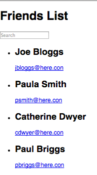

Setup the FilteredFriends applications to illustrate the basic data flow design patterns promoted by ReactJS.
Download and unzip this archive - it's the FilterFriends React app developed with the create-react-app tool. Open a terminal, go to the base folder (1WayDataFlow) and type:
$ npm installBefore running this app, we first need to setup a mock Web API. The json-server utility is ideal for this requirement. Install it as follows:
$ npm install -g json-serverCreate a file in the base folder (1WayDataFlow) named friends.json and paste in the JSON structure below:
{
"friends": [
{
"id": 1,
"name": "Joe Bloggs",
"address": "1 Main Street",
"email": "jbloggs@here.con"
},
{
"id": 2,
"name": "Paula Smith",
"address": "5 High Street",
"email": "psmith@here.con"
},
{
"id": 3,
"name": "Catherine Dwyer",
"address": "2 Upper Street",
"email": "cdwyer@here.con"
},
{
"id": 4,
"name": "Paul Briggs",
"address": "3 Side Street",
"email": "pbriggs@here.con"
}
]
}From the base folder start the mock API server:
¢ json-server ./friends.json -p 3001[ Note, the server is using port 3001.]
To prove the mock API is working, in the browser navigate to: http://localhost:3001/friends. The server will responds with the full list of friends. Try a HTTP request to: http://localhost:3001/friends/2. This time the Web API returns the friend with an id of 2. Leave the API server running.
Open a second terminal window, go to 1WayDataFlow and start the development server (provided by the create-react-app tool):
$ npm startThe app should be displaying the full list of friends retrieved from the API (see illustration). Use the search text box to find specific friends.

Examine the code in src/App.js and the src/components folder to ensure you understand how it works. Some features worth noting are:
Download and unzip this archive. Open a terminal window, go to the base folder (InverseDataFlow) and type:
$ npm installOpen a second terminal window, go to the 1WayDataFlow folder and start the json-server:
¢ json-server ./friends.json -p 3001In the 'InverseDataFlow' terminal window, start the development server:
$ npm startThis app is a redesign of the Filtered Friends app from the previous section - exact same functionality though. The component design for this version is as follows:
FriendsApp
|
V
------------------
| |
V V
SearchBox FilteredFriendList
|
| (multiple)
V
FriendSee src/App,js and src/components folder for details.
The main difference in this design is the input text field is now managed by a separate component. SearchBox. However, as in the previous design, the FriendsApp component still stores the current value of the text field as part of its state object. Any changes in the text field must trigger a recompute of the matching subset of friends. Therefore SearchBox must communicate any change to FriendsApp. This is achieved by the inverse data flow pattern. FriendsApp passing a function reference to SearchBox, via a prop. The function updates the state, thus forcing a re-rendering. SearchBox calls this function via the field's onChange event handler.
Examine the code to ensure you understand how it works.